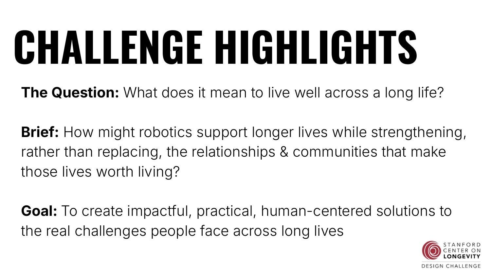
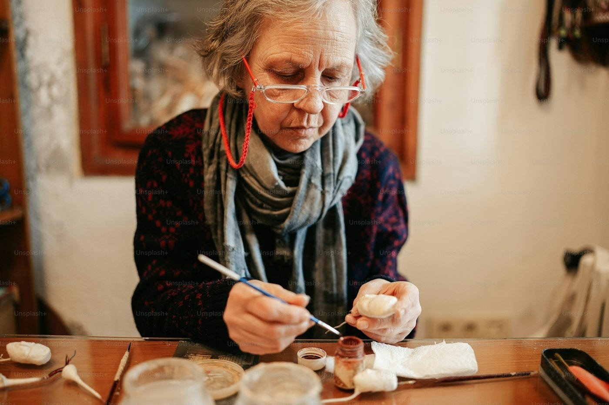
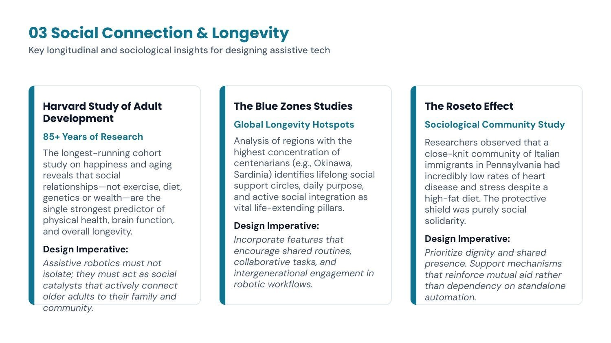
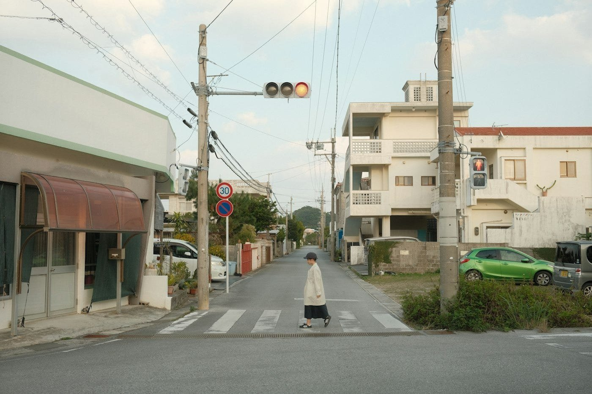
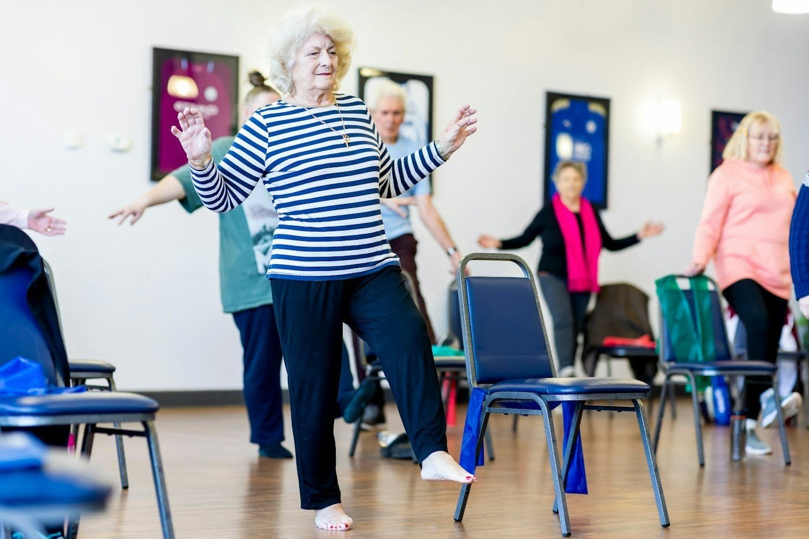
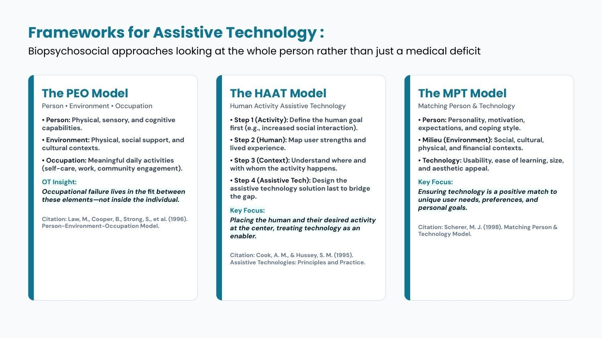
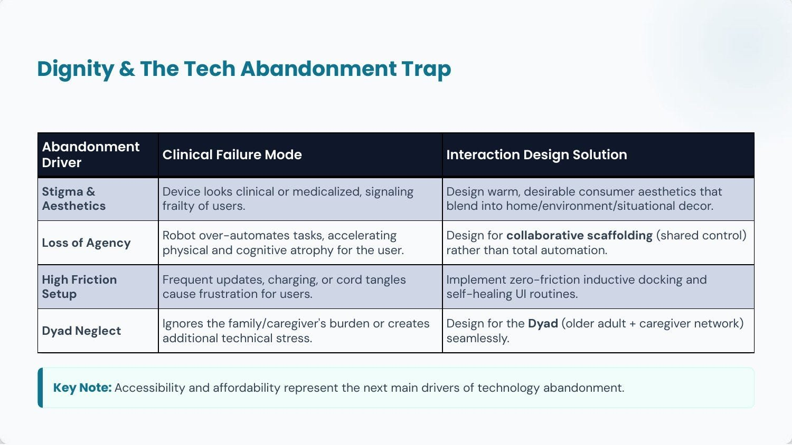
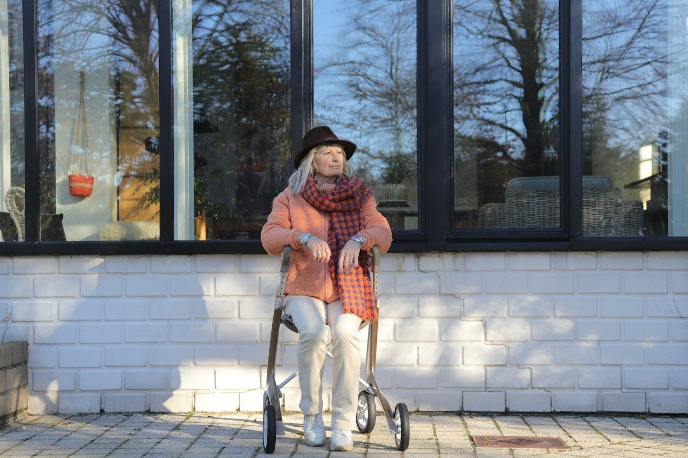
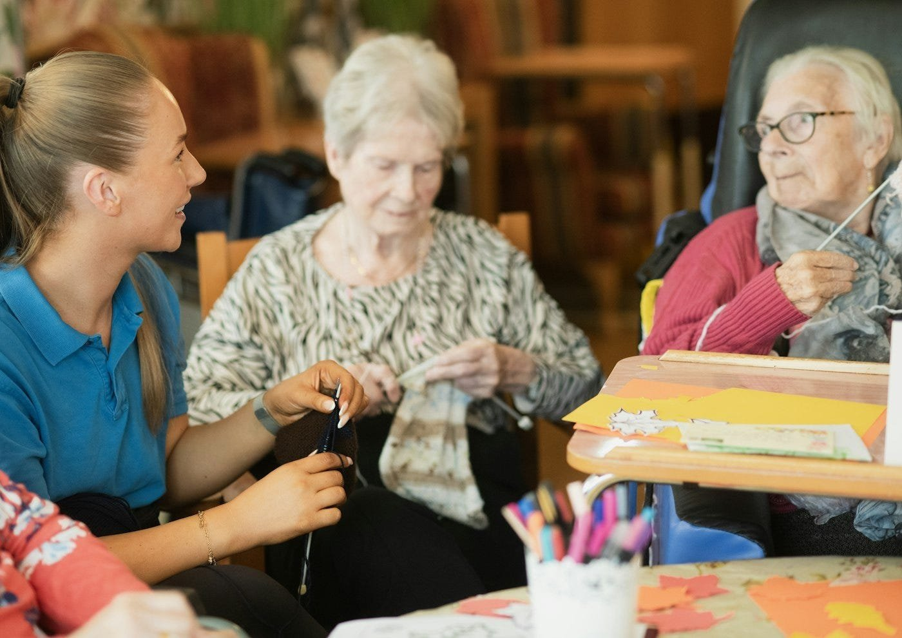

如果機器人要來了，我們怎麼老得更快樂？
這是我在 SVA MFA Interaction Design 修 Studio Partnership II 的每週課程日誌，整門課圍繞著 Stanford Center on Longevity Design Challenge 展開，和我的畢業製作系列文章分開記錄。
這學期我在 SVA MFA Interaction Design 修了一門叫 Studio Partnership II 的實作課，整門課只做 Stanford Center on Longevity Design Challenge 這一個專案。今年的題目是 Human-Centered Robotics for Longevity，要我們思考機器人怎麼支援更長壽的生活，同時讓人跟人之間的關係、還有身邊的社群變得更緊密，不要反過來取代掉這些讓生命值得活下去的東西。

這句話我反覆讀了好幾遍，發現它問的其實不單是機器人的問題。在動手設計機器人之前，得先回答活到八、九十歲的時候，什麼叫做「值得活下去」。所以我幫自己把題目重寫了一次。如果機器人要來了，我們怎麼老得更快樂？不求更久，求更快樂。
我在第一週先把自己的答案直白地寫下來，好讓自己之後可以回頭檢視。我心裡快樂的老年，是可以多做自己喜歡的事、少做不喜歡的事；以前做得到、後來沒辦法做的事，現在又能重新做到；還有那些你珍惜的記憶、你愛的人事物，不會慢慢淡掉或被遺忘。我相信機器人和 AI 可以是這個答案的一部分，但如果一台機器對這些事一點幫助都沒有，那它就只是個小玩意兒。

寫這些話的時候，我腦中浮現的長輩是我阿嬤。她七十幾歲過世，生前不太在意怎麼使用自己的身體，平常不運動，也不怎麼做日常的身體保養。她走的時候幾乎什麼都沒留下來，照片少得可憐，沒有影片、沒有文字，也沒有畫作。現在我擁有關於她的一切，全都只存在我的腦海裡。
我們在課堂上看到的研究，講的也是同一件事。Harvard Study of Adult Development 追蹤受試者超過 85 年，結果發現運動、飲食、基因和金錢，都無法預測誰能活得又長又好，真正拉開差距的關鍵是親密的人際關係。Blue Zones 的研究在那些充滿百歲人瑞的地方也看到同樣的現象，那裡的人有共同的生活作息、會一起動手做事，每天的日子都跟身邊的人待在一起。所以快樂的老年生活並不是安安靜靜地過，你還是會去忙東忙西，而且是跟別人一起做。


這門課跟我以前修過的實作課有個很不一樣的地方，我們的課程顧問 Michael Tranquilli 除了是設計師，同時也是一位職能治療師（OT）。在這週之前，我對 OT 的印象很模糊，覺得大概就是功能導向地幫人處理日常起居。聽完他的課，我才發現職能治療的格局大得多。OT 用科學的角度來看待我們怎麼使用身體，把人、日常作息、環境，還有中間的每一個步驟，當成一整個系統來看。我們平常習慣把快樂和心理健康歸類在「心理」層面，但聽 Michael 講完我才意識到，人怎麼使用身體，也會反過來塑造我們的心理，只是我們太低估這件事了。

像 PEO 和 HAAT 這類 OT 框架，都是從「人」跟「他們想做的事」出發，科技擺在最後面。PEO 認為，當一個人在某項活動裡「做不到」的時候，問題並不出在人本身，是人、環境和任務三者之間沒有配合好。這也改變了機器人存在的意義。機器人該做的是去修補那個落差，讓人可以繼續自己動手把事情完成。

Michael 也點出為什麼這麼多輔具最後都被收進抽屜裡積灰塵。那些裝置看起來太像醫療器材，一拿出來用，就等於向所有人宣告自己正在變虛弱。它們又替人做掉太多事，人慢慢失去掌控，久了連原本的技能都退化。設定起來也很麻煩。照顧的人需要什麼，它們完全沒想到。如果一台機器人讓人變得更依賴、更孤單，不管它的規格表寫得多漂亮，都是在替漫長的人生扣分。


我們的指導老師 Pinar Guvenc 則補上了那條我預期這學期會聽無數次的原則，要「跟」長輩一起設計，不要只是「幫」他們設計。她說，過去大多數的參賽作品，都只是坐在書桌前查資料、自己猜測長輩需要什麼。

上完第一週的課，我是這樣解讀這個比賽的。評審會問的是，你的設計究竟強化了人際關係，還是在不知不覺中取代了關係。我想從「人」這一端來回答這個問題，不要從機器人的功能清單出發。機器該做的，是把擋在一個人跟他所愛的人事物之間的阻礙清開，接著就退到旁邊，別擋在中間。
我是帶著對藝術和高齡者的興趣走進這門課的。至於為什麼，下週再聊。